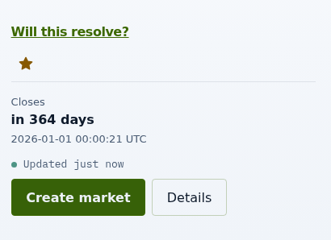
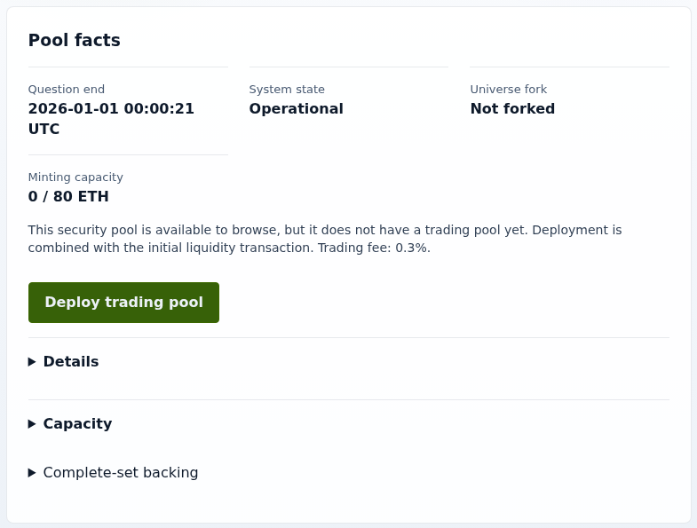
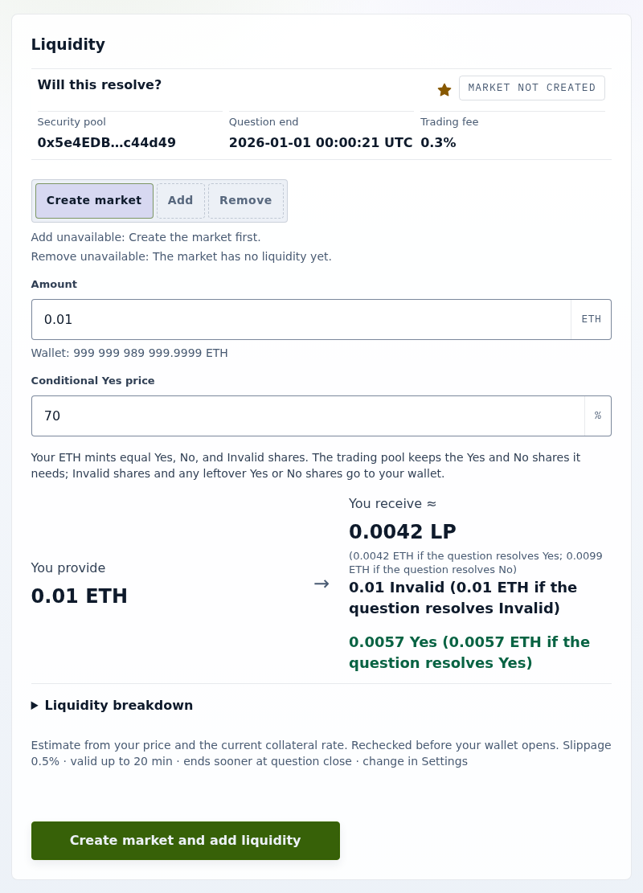
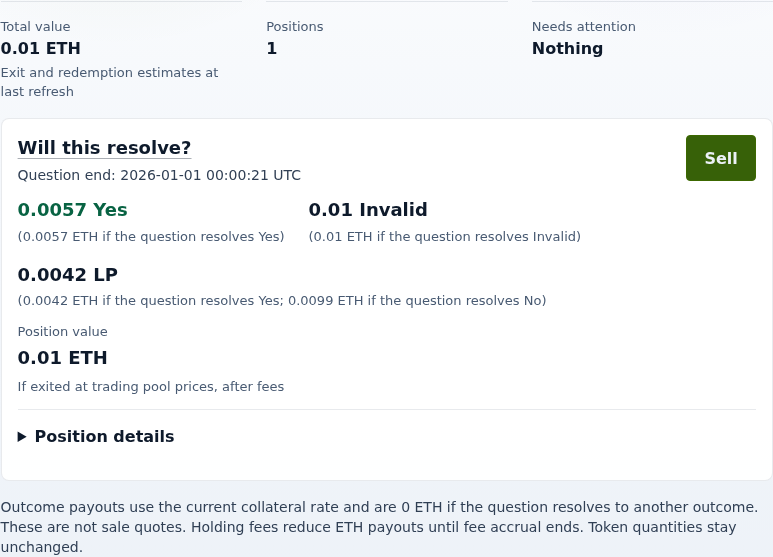

Tutorial
Your first Trading market
You will open trading for a SecurityPool by creating its trading pool and seeding it at a 70% conditional Yes price (the Yes price if the market does not resolve Invalid) with 0.01 ETH. You finish with LP tokens (the trading pool's liquidity-provider tokens) and separately held Invalid shares in your wallet, and the market listed as open.
Before you start
Trading is an exchange for Statoblast outcome shares: a trading pool swaps the Yes and No shares of exactly one SecurityPool, and a SecurityPool without one has no market yet. In the UI, creating the trading pool is called creating a market.
To practise without a wallet, run bun run app:serve:trading and open http://localhost:4163/?simulate=1&simScenario=deployed#/create-market. That simulator scenario has one SecurityPool, at 0x5e4EDB416494DbB62DD8C76E849aDee8e3c44d49, and no trading pool; the screenshots below come from it. For a live network, follow Configure the Trading UI, and if the UI opens the deployment screen, complete Deploy the Trading contracts first. Fund the wallet with the deposit plus gas.
Open a SecurityPool without a market
- Select the Create tab and paste the SecurityPool address into Search security pools. In the simulator, use the address above; on a live network, copy it from Statoblast.
- Select Open security pool. The form opens with the badge MARKET NOT CREATED and Create market selected, and the SecurityPool is saved as a favorite.
The next section continues from this form. To check the SecurityPool first, select Create again: the list shows your favorite SecurityPools in the selected universe that have no trading market yet, and Create market returns you to the form.

The details page tells you whether the SecurityPool can take a market. An enabled Create market button means it can, and selecting it returns you to the form. When it cannot, the button is disabled and names the reason, such as Question ended. This market can no longer be created. Minting capacity shows the collateral already minted against the SecurityPool's ceiling (used / ceiling); your deposit must fit in the difference.

Create and seed the trading pool
- Enter
0.01in Amount and70in Conditional Yes price. - Read the estimate: You provide 0.01 ETH, You receive ≈ LP tokens, 0.01 Invalid, and the Yes shares the trading pool did not need.
- Select Create market and add liquidity and confirm the one transaction that creates and seeds the trading pool. It reverts if it would mint fewer LP tokens than the estimate allows after your slippage tolerance, which you set under Settings.

Check the result
Open the Markets tab. The market is listed with the badge TRADING OPEN and a conditional price of 70% Yes. Then open Portfolio: the market shows your LP tokens, your Invalid, and the spare Yes as separate holdings.

At a 70% conditional Yes price, the trading pool holds roughly 30 Yes for every 70 No. The No reserve is the larger one because in a constant-product market the opposite reserve sets the price; Conditional pricing explains why.
Next: make your first trade against the trading pool you just created.